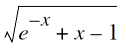

Model Version Update
Version 105.02 Update
- Added binning along NFIN for all the binnable parameters
- Introduced Gate-to-Substrate Bias dependent parasitic capacitance through parameters CGBL and CKAPPA (both binned)
- Introduced a second-step-junction to S-B and D-B diodes through parameters SJS, MJS2, SJSWS, MJSWS2, SJSWGS, MJSWGS2?SJD, MJD2, SJSWD, MJSWD2, SJSWGD, MJSWGD2
- Source/Drain Junction Tunneling Currents have been introduced (Refer to the BSIM4 model for equations, parameters and binning)
Version 105.03 update
- PCLMG, VASAT, ETAMOB have been added to the list of binnable parameters.
- DVTSHIFT parameter introduced as a handle to create Vth shift.
- All older mobility models replaced with one single new mobility model. The new mobility model uses UA, EU, UD and UCS parameters from MOBMOD=0 of 105.02 release if MOBMOD=1 is used from the previous version.
- New velocity saturation (Ion degradation) model. Parameters VSAT1 (binned), DELTAVSAT replace old parameter THETASAT. This change is not backward compatible.
- RDSMOD=0 implementation changed for better accuracy.
- CLM Model modified to prevent cross-correlation of binning parameters.
- Igb accumulation component added for IGBMOD=1. Available for both BULKMOD=0 and 1.
- Vds asymmetric function changed for better higher order derivative predictivity.
- Accumulation side charge centroid incorporated for better fitting of accumulation capacitance.
- Old parameter ALPHAQM replaced by PQM for the inversion side charge centroid equation.
- Definition of TNOM changed from Kelvin to Celsius to be consistent with BSIM4/BSIMSOI.
Version 105.031 update
- Limited the exponential function in TANH(x) definition
- GIDL Current Model modified for zero current at zero bias.
- Gate Current Model modified, as follows:
- Removed CLM effect in Charge Model due to wrong implementation.
- Fixed discontinuity in implementation at PCLMG=0 for CLM Model
Version 105.04 update
- Built-in tanh() function used instead of ((exp(x) - exp(-(x))) / (exp(x) + exp(-(x))))
- GIDL Current Model modified. New parameter PGIDL/PGISL introduced.
- Gate Current Model modified. Equations around BSIM4 parameters NTOX (binned) and TOXREF added
- CLM Model modified.
- Parameter VASAT removed. The old equation was known to case unphysical wiggles.
- ETAMOB binning corrected and linear temperature dependence added with new parameter EMOBT
- Velocity Saturation Model for better Id,sat and Gm,sat fitting
- Parameters DELTAVSAT, DVTSHIFT and KT1 are now binned
- CGEOMOD=0 case; removed QM effects in Fringe Caps
- Drain-to-Source Fringe Cap now available for all CGEOMOD
- Introduced DLCACC parameter for accumulation region capacitance (CAPMOD=1 and BULKMOD=1)
- Velocity Saturation Model for Short Channel C-V introduced. New parameter VSATCV (binned) added
- CLM Model for C-V Modified.
- Added relevant equations for Short Channel CV.
- Parameter NFIN has been converted from integer to real to enable optimization
- Gate-to-Substrate Overlap cap scalability corrected. New parameter CGBN introduced.
- Temperature Dependence for Subthreshold Swing enhanced with new parameter TSS (binned)
- RDSMOD=1 enhanced to capture quasi-saturation / current crowding for high voltage devices. New parameters RSDR, RDDR, PRSDR, PRDDR introduced and new equations added. Temperature dependence through TRSDR and TRDDR parameters
-
Asymmetric Model - ASYMMOD Switch.
- In order to model highly asymmetric devices, seven parameters identified in the model and their reverse mode equivalents created. These parameters are: CDSCDR, ETA0R, PDIBL1R, PTWGR, VSAT1R, RSDRR, and RDDRR (Original parameters + 'R' in the end)
- Additional parameter PRWG split into PRWGS and PRWGD for source and drain side in RDSMOD=1
- Some cosmetic changes to Impact Ionization model (especially IIMOD=1), implementing smooth functions
- Body Effect for BULKMOD=1. New parameters introduced: PHIBE, K1, K1ST, K1SAT.
- Removed nVtm in the poly-depletion correction term.
- Changed the value of q from 1.6e-19 to 1.60219e-19 (Coulombs)
- Quantum Mechanical Effects
- Introduced Non-saturation effect with new parameters A1 and A2. To be used to improve Id,sat and Gm,sat fitting.
- Lateral NUD Model introduced to create IV-CV Vth shift.
Version 106.0.0 update
BSIMCMG 106.0.0 is the first standard model for FinFETs. It is based on the version 105.031. Following are the changes from its base version:
- Used built-in hyperbolic functions instead of macros
- Added more significant digits to definition of electronic charge
- Fixed usage of parameter "CIT" in noise model
- Clamped phib and vbi to positive. Current expressions can be negative with SHMOD=1 at high temperature
- Fixed some typo bugs
Version 106.1.0 update
BSIMCMG 106.1.0 is the second standard model for FinFETs. It is based on the version 105.04. Following are the changes from its base version:
- The definitions of the physical intrinsic capacitances, CEDI and CEEI have been corrected.
- Gate resistance model has been corrected.
- Vfbsd equation for poly and metal gates has been changed.
-
For
_BINNABLE_parameters, the bounds are now applied to the "Effective PARAM" (PARAM_i) instead of the root term (PARAM). These include K0SI, DSUB, DVT1, PSAT, and PHIBE. - The effects of mobility, series resistances, and velocity saturation degradation terms on C-V calculations have been commented out for now (a roll back to BSIM-CMG105.031) to investigate those terms more carefully.
- Effective Channel Length equation has been changed.
- Coulomb scattering term has been changed for correct weak-inversion ID-VG slop/behavior.
- Threshold voltage definition has been introduced.
- Temperature dependence of gate tunneling current has been introduced.
- Temperature dependence of the body effect model, lateral non-uniform doping model, and non-saturation effect model has been introduced.
- The temperature effect on U0 now affects UTL.
- Temperature and length dependence of the impact ionization current has been introduced.
- The oxide thickness TOXG is now used in the gate tunneling current, instead of physical oxide thickness TOXP.
- The impact of series resistance on C-V model has been introduced. To enhance the fitting accuracy, a new parameter (correction factor) RCVFAC has been introduced and used in equation for RDSMOD=0.
- To accurately capture the transition region between subthreshold and strong inversion in I-V when a forward body bias is taken into account, a new model parameter K1SI has been introduced and used in Mob.
- The value of Is (Id) at accumulation region has been clamped at the fixed value of 1.0E-15. In this version, a new model parameter IMIN has been introduced to specify this value.
- NQSMOD=3 has been disabled to perform an offline study.
- A more careful examination of the C-V model derivation revealed that 1) dividing the term idscv by Dmob_cv and Dr_CV and 2) multiplying it by MclmCV were implementation mistakes. This has been corrected.
- To enhance the fitting accuracy, two new parameters DELTAVSATCV and PSATCV have been introduced in Dvsat and CV.
- When the argument x is too huge, the built-in cosh(x) could cause arithmetic point error due to overflow. To protect the code, for x > 40, 0.5/(cosh(x)-1) has been replaced by exp(-x).
- Gate-induced source and drain leakage current equations have been changed.
Version 107.0.0 update
BSIMCMG 107.0.0 is the third standard model for FinFETs. It is based on the version 105.04. Following are the changes from its previous version 106.1.0:
-
Lower
COVS,COVD;defaults to 0 from 25pF. -
For
CGEOMOD=1only,GEO1SW=1now enables the parametersCOVS,COVD,CGSP, andCGDPto be in F per fin per gate-finger per unit channel width. The default value of theGEO1SWswitch is zero. -
New NFIN scaling equations have been added for the following parameters:
PHIG,CDSC,CDSCD,CDSCDR,NBODY,VSAT,VSAT1,VSAT1R,ETA0, andU0. -
The length scaling of SCE and SS has been decoupled. The new binnable parameter
DVT1SShas been introduced. -
Temperature dependence of DIBL coefficient and Reverse-mode DIBL coefficient has been added. Two new parameters
TETA0andTETA0Rhave been introduced. -
Long channel DIBL, also called Drain-Induced Vth Shift (DITS) has been added. Two new parameters
DVTP0andDVTP1have been added. -
The average charge weighing factor has been added through the new parameter
CHARGEWF. -
Support for the length dependence of the
Gateworkfunction has been added. A new parametersPHIGLhas been added. - To be consistent with SOI, RTH and CTH equations in the self-heating sub-model have been updated.
-
The initial guess for the surface potential calculation has been improved. The model is now infinitely scalable with respect to
TFINandNBODYwithout any clamping onNBODY.
Version 108.0.0 update
BSIMCMG 108.0.0 is the fourth standard model for FinFETs. It is based on the version 105.04. Following are the changes from its previous version 107.0.0:
-
A new parameter
TEMPMODhas been introduced that enables switching between two types of temperature-dependent parameters. -
Thermal noise parameters
TNOIMOD=1andTNOIMOD=2have been introduced. -
Support for
RDSMOD=1has been added to avoid introducing extra nodes. -
New parameters have been added to
ASYMMOD=1.
Version 110.0.0 update
BSIMCMG 110.0.0 is the fifth standard model for FinFETs. It is based on the version 105.04. Following are the changes from its previous version 108.0.0:
-
T9 equation in BULKMOD=1 code now uses
K1_tinstead ofK1. -
Charge term
qisin thermal noise changed toqia. -
For NOIMOD=1,
max()is now applied toVds/Idsinstead of onlyIds. -
Lower clamp limits on two model parms,
ALPHAII0andALPHAII1fixed. -
Possible missing terms in
Xpart/Qbulcalculations fixed. -
Added initialization to
LK2SAT,NK2SAT,PK2SAT,LK2SAT1,NK2SAT1,PK2SAT1. -
Hidden variables
Qdep_ov_Cins,qb_acc_s, andqb_acc_dfixed. - Smooth clamp implemented on gate current to prevent large values.
- Model parameter initialization updated.
- Comment text on BULKMOD= 1,2 related model parameters updated.
- Code updated to account for missing mobility term in noise model.
- TNOIMOD=2 fixed for divide by zero when ROIA or ROIB =0.
- Redundant variables from Model code removed.
-
Fatal warning message for
PDIBL2_iremoved. - TNOIMOD = 1removed.
- For ASYMMOD=1, parameters such as MEXPR, UCR and their binning terms have been updated.
-
NBODY_iis misplaced beforeInv_L, Inv_NFINandInv_LNFINare declared. -
Theta_RSCEshould not be put within the same begin/end block asTheta_DIBL. -
Fix typo of number with
CIGD_iclamping.
- Better modeling of body bias effects in I-V and C-V.
- Model parameters increased to support ASYMMOD=1.
- Use 'defines "macros" in place of conventional Verilog-A instance/model parameter definitions.
- Added optional temperture node for self-heating analysis.
- Added BSIM4-like support for VFBSD in gate-channel tunneling current.
-
Collapsed
bsimcmg_main.vaintobsimcmg.va - DITS implemented.
-
NFIN scaling of additional parameters;
NFINNOMadded as an instance parameter. -
Addition of output parameters:
T_TOTAL_K,T_TOTAL_C, andT_DELTA_SH. - RTH Dependence on NFIN, FPITCH.
- Better description of parameters.
Version 111.0.0 update
Following are the changes from its previous version 110.0.0:
Bug Fixes:
-
Fixed
noiGd0expression and possible nonphysical behavior inTNOIMOD = 1. -
Fixed expressions of
CGG,CDG,CSG,CEGoutput variables. - Included CLM/DIBL effects in Gamma.
- Fixed correlation coefficient issue that affects Sid level.
- Aligned GIDL/GISL parameters master/slave relations according to manual.
- Corrected the units of N-term and P-term binning parameters.
-
Fixed
Rsourcegeo/Rdraingeomultiplication withW. -
Corrected mobility degradation in accumulation at
Vb!=0. - Assigned unique noise names.
- Renamed “bsimcmg_PSS_initialization.include: to “bsimcmg_initialization.include”.
- Fixed bug in DITS module leading to kink in current derivative.
- Fixed bug in operating point variable GDS.
- Aligned units of master and slave parameters.
Enhancements:
- Improved clamping on Dmob.
- Separate bias-dependent/bias-independent parts of junction capacitance.
-
Renamed model parameter
ImintoIMIN. -
Added
VDSEFFa built-in output variable. -
Improved fitting flexibility of
NF50at lowIds. - Added an equation reference for output variables in manual.
-
Igatecurrent clamp concern. - Separate both model/instance parameters and pure model, pure instance parameters.
-
Collapse
tterminal whenSHMOD = 0orRTH0 = 0. -
Remove
DEVTYPE, use -1 forptype. - Aligned units of xxxR with xxx model parameters.
-
Removed
ifdefstatements. - Replaced functions with macros and added some macros.
- Added parameters to BPxxx category.
- Parameters range updated to avoid divide by zero or other possible numerical exceptions.
- Initialized variables to prevent hidden states.
- Correctly added drain-source fringing capacitance to the OP variable.
-
Added binning for
DVTP0andDVTP1. -
Improved
NQSMOD=2convergence. - Addressed numerical issue due to  .
-
Corrected output variable
ITHdefinition forRDSMOD=1. -
Replaced
if($param_given(PARAMETER))conditions withif(PARAMETER)for parametersNVTM,NFINNOMandTFIN_TOP/TFIN_BASE. -
L offset parameters,
LINT,DLBINandXLare made binnable. - Binning CV parameter values made default to DC counterpart.
-
Introduced gate current scaling/adjustment factors-
IGB0MULTandIGC0MULT.
Return to top